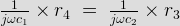
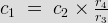
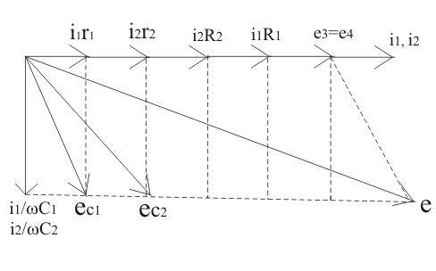
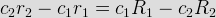
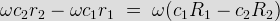
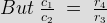
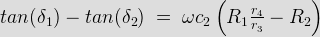

This bridge provide us the most suitable method for comparing the two values of capacitor if we neglect dielectric losses in the bridge circuit. The circuit of De Sauty's bridge is shown below.
De Sauty's Bridge
Battery is applied between terminals marked as 1 and 4. The arm 1-2 consists of capacitor c1 (whose value is unknown) which carries electric current i1 as shown, arm 2 - 4 consists of pure resistor (here pure resistor means we assuming it non inductive in nature), arm 3 - 4 also consists of pure resistor and arm 4 - 1 consists of standard capacitor whose value is already known to us.
Let us derive the expression for capacitor c1 in terms of standard capacitor and resistors.
At balance condition we have,

It implies that the value of capacitor is given by the expression

In order to obtain the balance point we must adjust the values of either r3 or r4 without disturbing any other element of the bridge. This is the most efficient method of comparing the two values of capacitor if all the dielectric losses are neglected from the circuit.
Now let us draw and study the phasor diagram of this bridge. Phasor diagram of De Sauty bridge is shown below:

De Sauty's bridge phasor diagram
Let us mark the voltage drop across unknown capacitor as e1, voltage drop across the resistor r3 be e3, voltage drop across arm 3 - 4 be e4 and voltage drop across arm 4 - 1 be e2. At balance condition the electric current flows through 2 - 4 path will be zero and also voltage drops e1 and e3 be equal to voltage drops e2 and e4 respectively. In order to draw the phasor diagram we have taken e3 (or e4) reference axis, e1 and e2 are shown at right angle to e1 (or e2). Why they are at right angle to each other? Answer to this question is very simple as capacitor is connected there, therefore phase difference angle obtained is 90°.
Now instead of some advantages like bridge is quite simple and provides easy calculations, there are some disadvantages of this bridge because this bridge give inaccurate results for imperfect capacitor (here imperfect means capacitors which not free from dielectric losses). Hence we can use this bridge only for comparing perfect capacitors.
Here we interested in modify the De Sauty's bridge, we want to have such a kind of bridge that will gives us accurate results for imperfect capacitors also. This modification is done by Grover. The modified circuit diagram is shown below:
Modified De Sauty's bridge
Here Grover has introduced electrical resistances r1 and r2 as shown in above on arms 1 - 2 and 4 - 1 respectively, in order to include the dielectric losses. Also he has connected resistances R1 and R2 respectively in the arms 1 - 2 and 4 - 1. Let us derive the expression capacitor c1 whose value is unknown to us. Again we connected standard capacitor on the same arm 1 - 4 as we have done in De Sauty's bridge. At balance point on equating the voltage drops we have:
r_4\;=\;\left(R_2+r_2+\frac{1}{j\omega c_2}\right)r_3\cdot\cdot\cdot\cdot\cdot\cdot\cdot\cdot\cdot(1)")
On solving above equation we get:

This the required equation.
By making the phasor diagram we can calculate dissipation factor. Phasor diagram for the above circuit is shown below

Let us mark δ1 and δ2 be phase angles of the capacitors c1 and c2 capacitors respectively. From the phasor diagram we have tan(δ1) = dissipation factor = ωc1r1 and similarly we have tan(δ2) = ωc2r2.
From equation (1) we have

on multiplying ω both sides we have


Therefore the final expression for the dissipation factor is written as

Hence if dissipation factor for one capacitor is known. However this method is gives quite inaccurate results for dissipation factor.

 by
by